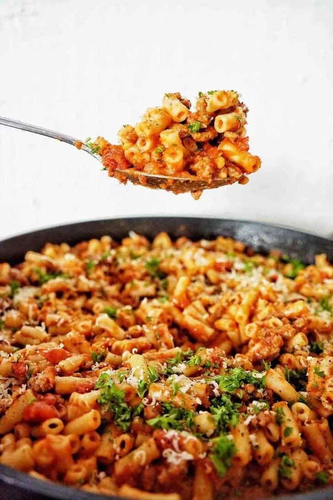

Macaroni Bolognese Recipe

An image of Macaroni-Bolognese
Macaroni Bolognese is a classic pasta dish that combines al dente macaroni with a rich and flavorful Bolognese sauce.
The sauce features ground beef, onions, garlic, tomatoes, and aromatic herbs, creating a hearty and satisfying meal that
is beloved for its comforting taste and comforting appeal.
Ingredients:
- 500g ground beef
- 1 onion, chopped
- 2 cloves of garlic, minced
- 1 carrot, finely chopped
- 1 celery stalk, finely chopped
- 400g canned diced tomatoes
- 2 tablespoons tomato paste
- 1 teaspoon dried oregano
- 1 teaspoon dried basil
- Salt and pepper to taste
- 300g macaroni pasta
- Grated Parmesan cheese for serving
Steps:
- In a large skillet, heat some olive oil over medium heat.
- Add the chopped onion and minced garlic. Sauté until the onion becomes translucent.
- Add the ground beef and cook until browned.
- Add the chopped carrot and celery. Cook for a few minutes until they start to soften.
- Add the canned diced tomatoes, tomato paste, dried oregano, dried basil, salt, and pepper. Stir well to combine.
- Reduce the heat to low, cover, and let the sauce simmer for about 30 minutes, stirring occasionally.
- In the meantime, cook the macaroni pasta according to the package instructions until al dente. Drain the pasta.
- Add the cooked macaroni to the Bolognese sauce. Stir to coat the pasta with the sauce.
- Serve hot, sprinkled with grated Parmesan cheese.